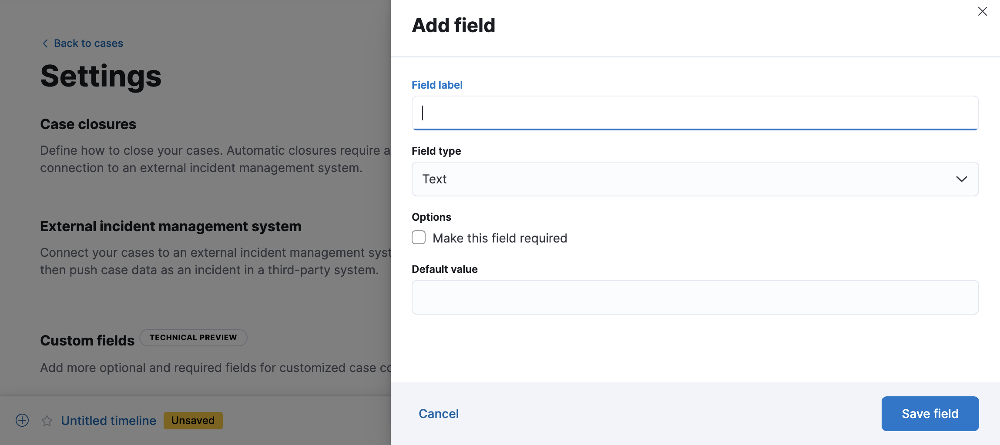
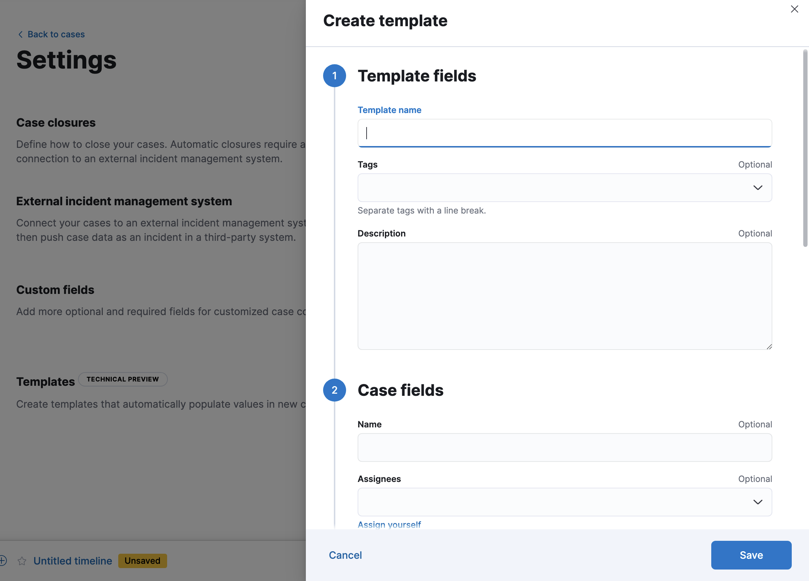

Configure case settings
editTo change case closure options and add custom fields, templates, and connectors for external incident management systems, go to Cases → Settings.
To view and change case settings, you must have the appropriate Kibana feature privileges. Refer to Cases prerequisites.
Case closures
editIf you close cases in your external incident management system, the cases will remain open in Elastic Security until you close them manually.
To close cases when they are sent to an external system, select Automatically close cases when pushing new incident to external system.
External incident management systems
editYou can push Elastic Security cases to these third-party systems:
- ServiceNow ITSM
- ServiceNow SecOps
- Jira (including Jira Service Desk)
- IBM Resilient
- Swimlane
- Webhook - Case Management
To push cases, you need to create a connector, which stores the information required to interact with an external system. After you have created a connector, you can set Elastic Security cases to automatically close when they are sent to external systems.
To create connectors and send cases to external systems, you need the appropriate license, and your role needs All privileges for the Action and Connectors feature. For more information, refer to Cases prerequisites.
To create a new connector:
- From the Incident management system list, select Add new connector.
- Select the system to send cases to: ServiceNow, Jira, IBM Resilient, Swimlane, or Webhook - Case Management.
-
Enter your required settings. For connector configuration details, refer to:
To change the settings of an existing connector:
- Select the required connector from the incident management system list.
- Click Update <connector name>.
- In the Edit connector flyout, modify the connector fields as required, then click Save & close to save your changes.
To change the default connector used to send cases to external systems, select the required connector from the incident management system list.
Mapped case fields
editWhen you export an Elastic Security case to an external system, case fields are mapped to existing fields in ServiceNow, Jira, IBM Resilient, and Swimlane. For the Webhook - Case Management connector, case fields can be mapped to custom or pre-existing fields in the external system you’re connecting to.
Once fields are mapped, you can push updates to external systems, and mapped fields are overwritten or appended. Retrieving data from external systems is not supported.
Case field |
Mapped field |
Title |
The case
|
Description |
The case |
Comments |
The case
New and edited comments are added to incident records when pushed to ServiceNow, Jira, or IBM Resilient. Comments pushed to Swimlane are appended to the |
Custom fields
editYou can add optional and required fields for customized case collaboration.
-
In the Custom fields section, click Add field.
 - You must provide a field label and type (text or toggle). You can optionally designate it as a required field and provide a default value.
When you create a custom field, it’s added to all new and existing cases. In existing cases, new custom text fields initially have null values.
You can subsequently remove or edit custom fields on the Settings page.
Templates
editThis functionality is in technical preview and may be changed or removed in a future release. Elastic will work to fix any issues, but features in technical preview are not subject to the support SLA of official GA features.
You can make the case creation process faster and more consistent by adding templates. A template defines values for one or all of the case fields (such as severity, tags, description, and title) as well as any custom fields.
To create a template:
-
In the Templates section, click Add template.
 - You must provide a template name and case severity. You can optionally add template tags and a description, values for each case field, and a case connector.
When users create cases, they can optionally select a template and use its values or override them.
If you update or delete templates, existing cases are unaffected.